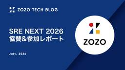
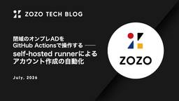

ZOZO TECH BLOG
https://techblog.zozo.com/
ZOZO TECH BLOG
フィード

SRE NEXT 2026 協賛&参加レポート
ZOZO TECH BLOG
こんにちは。Developer Engagementブロックの@wirohaです。2026年7月10日、11日に「SRE NEXT 2026」が開催されました。ZOZOはSilverスポンサーとして初協賛し、スポンサーブースを出展しました。 本記事ではZOZOから登壇したセッションと気になったセッションの紹介、協賛ブースの様子についてお伝えします！ ZOZOエンジニアの登壇セッション ZOZOTOWNの進化と信頼性を両立する負荷試験 — 年十数回、現場の課題と効率化（LT） speakerdeck.com ZOZOTOWNの会員ID基盤では、年十数回の負荷試験を実施しています。新機能の追加やリ…
2日前

7年運用したInfobloxの廃止とAkamai Edge DNS Primary昇格によるDNS基盤刷新 2
2
ZOZO TECH BLOG
はじめに こんにちは、SRE部 フロントSREブロックの秋田と池田です。普段はリプレイスプロジェクトをはじめ、BFF・WebアプリケーションやオンプレのWebサーバーなど、ユーザー体験に関わるシステムの運用保守に携わっています。 ZOZOTOWNでは長年、オンプレミスのDNSアプライアンスとしてInfobloxを利用してきました。しかし、7年間運用してきたInfobloxがEOL（End of Life）を迎えることとなり、リプレイスを検討することになりました。 本記事では、Infobloxのリプレイス検討から廃止に至るまでの課題をご紹介します。あわせて、Akamai Edge DNSのPri…
4日前

閉域のオンプレADをGitHub Actionsで操作する ── self-hosted runnerによるアカウント作成の自動化 2
ZOZO TECH BLOG
はじめに こんにちは、コーポレートエンジニアリング部ITサービスブロックの高塩です。2026年2月に入社し、社内の共通システムやIdP、SaaSの管理、日々のオペレーション自動化などを担当しています。 ZOZOでは入社者のマスタデータをkintoneで管理しています。入社のたびに、Active Directory（以下、AD）を起点にMicrosoft 365・Google Workspace・Boxなどでアカウントを作成し、利用できる状態まで整えています。この作業は長らく手作業で運用してきましたが、工数や属人化、そしてCSVの受け渡しに課題を抱えていました。 オンプレADやLDAPサーバーを…
8日前

AIによる工数削減を計測して見えた結果と考察
ZOZO TECH BLOG
はじめに こんにちは、データシステム部MA推薦ブロックの佐藤（@rayuron）です。私たちは、主にZOZOTOWNのメール配信のパーソナライズなど、マーケティングオートメーションに関するレコメンドシステムを開発・運用しています。 以前、テックブログで工数やAI活用による工数削減を計測する仕組みを、タスク管理ツールのGitHub Projectsで構築する方法をご紹介しました。前回の記事が計測の仕組みの作り方を扱ったのに対し、本記事では仕組みを1年間運用して得られた結果とその考察、そして今後の展望をご紹介します。
9日前
FlutterテンプレートのSPM移行と3 flavor環境構築の自動化
ZOZO TECH BLOG
はじめに こんにちは、新規事業部フロントエンドブロックの大野純平です。2025年度に新卒入社し、現在のチームに配属されました。チームでFlutter製モバイルアプリを開発する中で、新規プロジェクトの立ち上げを効率化するための社内テンプレートリポジトリの整備を進めています。 このテンプレートを育てる中で、Flutter 3.44へのアップデートに伴うCocoaPodsからSPMへの移行対応が積み残しになっていました。あわせて、このタイミングでdev / stg / prdの3環境対応も新規に追加しました（3 flavor化自体はSPM移行の必須要件ではなく、テンプレート整備の一環で同時に着手した…
10日前
AWSの強い権限は使い捨てに ── ZOZOがJITアクセスを全社導入した設計と運用
ZOZO TECH BLOG
はじめに こんにちは、全社AWS管理部門の江島です。社内で利用されているAWS環境を全社横断的に管理する役割を担っています。 全社AWS管理部門では、AWSを安全に運用するために日頃からさまざまな取り組みを行っています。例えば、AWS本番環境へのアクセス管理においてIAM Identity Centerを活用し、定期的な棚卸しや申請ベースの権限管理といったセキュリティ対策を継続的に実施してきました。 こうした取り組みを土台としつつ、さらなるセキュリティ強化に向けて「必要なときだけ権限を付与する」最小権限の原則を徹底することを次の目標に掲げました。 本記事では、JITアクセス（ジャストインタイム…
15日前
AWS Summit Japan 2026 参加レポート
ZOZO TECH BLOG
はじめに こんにちは、ZOZOMO部FBZブロックの杉田です。普段はFulfillment by ZOZOが提供するAPIシステムを開発・運用しています。昨年からは、社内における開発者向けAI支援ツールの推進を担う専門チームでも兼務で活動しています。 ZOZOMO部SREブロックの𠮷富です。普段はFulfillment by ZOZOのSREをしています。 2026年6月25日・26日の2日間、幕張メッセにて「AWS Summit Japan 2026」が開催されました。本記事では、会場や各ブースの様子に加え、特に印象に残ったセッションについてご紹介します。
18日前
システム構成図、もう手で描くのやめました ── Claude Codeで構成図を自動生成・自動更新する仕組み
ZOZO TECH BLOG
はじめに こんにちは、ブランドソリューション開発本部ZOZOMO部FBZブロックの座間です。2025年4月にZOZOへ新卒入社し、現在はFulfillment by ZOZO（以下、FBZ）のバックエンド開発を担当しています。最近はチームメンバーの影響でビリヤニにハマっています。 今回は、Claude Codeを活用してFBZのシステム構成図を自動生成・自動更新する仕組みを構築した事例を紹介します。
19日前
「見た目の好み」を捉えるマルチモーダル推薦システム —— 画像特徴量でCTR・CVR・売上を改善
ZOZO TECH BLOG
はじめに こんにちは。データシステム部・MA推薦ブロックの住安（@kosuke_sumiyasu）です。 私たちのチームは、ZOZOTOWNのメール・LINE・プッシュ通知といったマーケティングオートメーション（MA）の推薦システムを開発・運用しています。目指しているのは、ユーザーひとりひとりに最適な配信を届けることです。 ZOZOTOWNで本番運用されている推薦モデルは、価格・ブランド・カテゴリ・カラーといったテーブル特徴量のみを学習に用いていました。そのため、商品画像が持つ視覚情報（シルエット・質感・カラー・柄）を活用できていませんでした。「オーバーサイズシルエット」や「光沢感」「チェック…
22日前
設計書から始めるレガシーFragmentのリファクタリング
ZOZO TECH BLOG
はじめに こんにちは、ZOZOTOWN開発本部ZOZOTOWN開発2部Androidブロックのにしみーです。 本記事では、レガシーなFragmentをKotlin + Jetpack Compose + MVVMベースの構造へリファクタリングした取り組みを紹介します。 対象画面のFragmentはJava製の共通基底クラスを継承しており、ロジック・状態管理・データ取得が基底クラスとFragmentに混在した構造でした。この構造を解体しながらリファクタリングを進めるにあたり、私たちは2つのアプローチを採用しました。1つは、実装前にAIと協働で「仕様調査 → 設計書 → タスク分解」のドキュメント…
24日前
Monthly Tech Report 2026年5月
ZOZO TECH BLOG
ZOZO開発組織の2026年5月分の活動を振り返り、ZOZO TECH BLOGで公開した記事や登壇・掲載情報などをまとめたMonthly Tech Reportをお届けします。 ZOZO TECH BLOG 2026年5月は、前月のMonthly Tech Reportを含む計10本の記事を公開しました。中でもClaude Code関連のE2Eテストに関する記事は多くの反響がありました。ぜひご覧ください。 techblog.zozo.com 登壇 RubyKaigi 2026 アフターイベント〜初参加LT・スポンサー4社のパネル〜 5月13日に開催された「RubyKaigi 2026 アフタ…
24日前
SQSメッセージ処理の高速化によるクレジットカード決済の待ち時間改善（PCリプレイス編）
ZOZO TECH BLOG
はじめに こんにちは、カート決済部カート決済基盤ブロックの多田とSRE部カート決済SREブロックの伊藤（@_itito_）です。普段はZOZOTOWN内のカート機能や決済機能の開発、保守運用、リプレイスを担当しています。 以前の記事で、クレジットカード決済処理をSQSで非同期化し、キャパシティコントロールを実現した取り組みをご紹介しました。 techblog.zozo.com 非同期化によって決済処理の安定性は大幅に向上しました。しかし、セールの終了時刻となる日曜から月曜にかけての日跨ぎ時に注文のピークを迎える時間帯では、依然としてユーザーの待ち時間が課題として残っていました。本記事では、SQ…
25日前
「秘伝のタレ」を未来のシステムへ繋ぐ ── フィーチャー分割で実現した商品詳細APIリプレイス
ZOZO TECH BLOG
はじめに こんにちは。ZOZOでアプリバックエンドブロックのブロック長をしている湯川です。以前公開した記事では、ZOZOTOWNアプリ用APIのリプレイスの初期の開発・課題・解決方法などについて紹介しました。 techblog.zozo.com 今回はその続編として、商品詳細APIリプレイスをどのように進めたのかを紹介します。今回のリプレイス対象は、約5,000行のコードと約410項目のレスポンスを持つ巨大なAPIでした。長年の機能追加によって複雑化し、いわゆる「秘伝のタレ」と呼ばれる状態になっていました。 しかし本記事でお伝えしたいのは、単なるAPIリプレイスの話ではありません。 限られた期…
1ヶ月前
Claude CodeがSOC業務を全自動でやってくれるってさ
ZOZO TECH BLOG
はじめに こんにちは、情報セキュリティ部の兵藤です。日々ZOZOの安全を守るためSOC業務に取り組んでいます。 本記事では、SOCでの業務効率化のためにClaude Codeを活用して、自動アラートトリアージエージェント（以降SOC Agent）を構築した事例を紹介します。 また、情報セキュリティ部ではその他にもZOZOを守るための取り組みを行っています。詳細については以下の「OpenCTIをSplunkに食わせてみた」をご覧ください。 techblog.zozo.com 目次 はじめに 目次 背景と概要 SOC Agentの設計 Agentの全体像 Splunk MCPの活用 OpenCTI…
1ヶ月前
JJUG CCC 2026 Spring 協賛&参加レポート
ZOZO TECH BLOG
はじめに こんにちは、データ・AIシステム本部 検索基盤部 検索基盤ブロックの吉永です。 ZOZOは2026年5月30日（土）に東京・新宿のベルサール新宿グランドで開催された「JJUG CCC 2026 Spring」にブーススポンサーとして協賛しました。JJUGは、日本におけるJava技術の向上・発展と一層の普及・活性化を目指して設立された、ボランティアメンバーで運営される日本のJavaユーザーコミュニティです。CCCは、JJUGが主催する「Javaに閉じず」「技術に閉じず」オープンソースを中心とする様々なコミュニティから参加者を募って、コミュニティを横断した「クロスコミュニティなカンファレ…
1ヶ月前
2026年度 人工知能学会全国大会（JSAI2026）協賛&参加レポート
ZOZO TECH BLOG
こんにちは。ZOZO研究所の莫です。ZOZO研究所はZOZOグループが保有するファッションに関する多様な情報資産を活用し、「ファッションを数値化する」ことをミッションとしている研究組織です。 今回は、2026年6月8日（月）から6月12日（金）にかけてGメッセ群馬で開催された2026年度 人工知能学会全国大会（JSAI2026）に参加しました。本記事では、JSAI2026でのZOZO・ZOZO NEXTメンバーの取り組み、JSAI2026の様子や参加メンバーの気になった発表を報告します。なお、JSAIに参加したZOZO・ZOZO NEXTメンバーの協力を得て本記事を作成しました。 2026年度…
1ヶ月前
スクラムが新卒の学習環境として優れている理由 ── リファインメント・プランニング・モブプロから何を学んだか
ZOZO TECH BLOG
はじめに 2025年新卒のブランドソリューション開発本部ZOZOMO部OMOブロックの東谷です！ 私は筋トレが趣味なのですが、増量期（筋肉をつけるために体重を増やす時期）が終わろうとしています。早く痩せなきゃと思いつつ、つい揚げ物や甘いものを食べ、現実から逃げている今日この頃です。 早いもので入社からもう1年が経ちました。この1年を振り返って一番強く感じているのは、スクラムは「アジャイル開発の手法」であると同時に、新卒にとっての最高の学習環境だったということです。 配属直後の自分は、リファインメントの議論についていけず、実装中もどこから手をつけてよいか分からない状態でした。それでも1年後、チー…
1ヶ月前
AI Agent Conference 2026 参加レポート
ZOZO TECH BLOG
はじめに こんにちは、SRE部 検索基盤SREブロックの富田です。2026年5月4日〜5日の2日間、New Yorkで開催された「AI Agent Conference 2026」に参加しました。 本記事では、現地の様子と印象に残ったセッションをご紹介します。
1ヶ月前
Cloud SQL for MySQLのIAM認証化とGitHub Actionsを承認ゲートにした書き込み権限の一時払い出し
ZOZO TECH BLOG
はじめに こんにちは、MA部SREブロックの片桐です。MA部ではメルマガやLINE、アプリプッシュ通知を配信するためのマーケティングオートメーションシステムを開発・運用しています。 MA部ではDBとして主にCloud SQL for MySQLを利用しており、調査や不具合対応のために開発メンバーがDBにログインして各種SQLを実行する場面があります。 このとき、共用の特権DBユーザーとパスワード認証を利用していました。しかし、この方式ではパスワード管理が必要になるほか、DB上のログイン主体も個人に紐づけにくい状態でした。 これらの課題を解決するために、人間によるDBへのログイン方式を、共用の特…
1ヶ月前
AI駆動開発を2コマンドで組織標準に ── Claude Code × Codexで設計からテストまで
ZOZO TECH BLOG
はじめに こんにちは。基幹システム本部 基幹開発部 商品管理ブロックの田中秀明です。 Claude CodeやCodexの利用が広がるほど、各人の使い方、プロンプト、レビュー観点、AIへ任せる範囲がばらつき始めました。AIを高度に使いこなせる人は開発の進め方そのものを変えられる一方で、これから使い始める人にとっては「どの工程で、どこまでAIに任せればよいのか」が分かりにくい状態になっています。 ZOZOでは2025年7月に、1人あたり月額200ドルを基準として、Claude Codeをはじめとする開発AIエージェントを全エンジニアに導入することを発表しました。 corp.zozo.com 利用…
2ヶ月前
【イベントレポート】「RubyKaigi 2026 アフターイベント〜初参加LT・スポンサー4社のパネル〜」を開催しました！
ZOZO TECH BLOG
はじめに こんにちは、Developer Engagementブロックの@wirohaです。5月13日に「RubyKaigi 2026 アフターイベント〜初参加LT・スポンサー4社のパネル〜」を開催しました。 株式会社ZOZO、株式会社リブセンス、株式会社TOKIUM、株式会社マイベストの4社共催で、RubyKaigi 2026を振り返るアフターイベントです。初参加エンジニアによるLTと、公募によるLT、各企業によるブース運営に関するパネルディスカッション、そして懇親会を行いました。 当日の雰囲気を含めてレポートします！
2ヶ月前
TSKaigi 2026 スポンサーブースクイズ解説
ZOZO TECH BLOG
こんにちは、基幹システム本部リプレイス推進部のssssotaです。本記事では、TSKaigi 2026、ZOZOのスポンサーブースで実施したクイズを紹介・解説します。 はじめに TSKaigi 2026は、2026年5月に実施されたTypeScriptに関するカンファレンスです。ZOZOはゴールドスポンサーとして参加し、スポンサーブースでTypeScriptやJavaScriptに関するクイズを実施しました。TSKaigi 2026のレポートは以下の記事にまとめていますので、あわせてご覧ください。 techblog.zozo.com 来場者の皆さんに体験してもらったクイズアプリはGitHubリ…
2ヶ月前
TSKaigi 2026 協賛&参加レポート
ZOZO TECH BLOG
Developer Engagementブロックの@ikkouです。2026年5月22・23日の2日間にわたりベルサール羽田空港で「TSKaigi 2026」が開催されました。 ZOZOはGold Sponsorとして協賛し、スポンサーブースを出展しました。ZOZOがTSKaigiに協賛するのは今回が初めてです。 technote.zozo.com 本記事では、前半はZOZOのWebフロントエンドエンジニアが気になったセッションを紹介します。後半では、ZOZOのスポンサーブースの様子と各社のブースにおけるコーディネートを写真中心に報告します。
2ヶ月前
ベクトル検索対応に向けたWEAR検索インデクサー刷新 ── OpenSearch Ingestionでの試行錯誤
ZOZO TECH BLOG
はじめに こんにちは。WEARバックエンド部SREブロックの春日です。普段はWEARというサービスのSREとして開発・運用に携わっています。 本記事では、WEARのハイブリッド検索のリリースに伴い刷新した検索インデクシングシステム（以下、インデクサー）について、OpenSearch Ingestionを採用しようとした際にハマったポイントや、ベクトル検索のためのインデクサーを設計する上で工夫した点を中心に紹介します。
2ヶ月前
クラウドネイティブ会議 参加レポート
ZOZO TECH BLOG
はじめに こんにちは。プラットフォームSREブロックの酒部・高塚・亀井です。私たちは2026年5月14日〜15日に名古屋で開催された「クラウドネイティブ会議」に参加してきました。本記事では印象に残ったセッションをご紹介します！ はじめに クラウドネイティブ会議とは セッションレポート キーノート：老舗IoTクラウドサービス組織の変革 -クラウドネイティブをはじめよう- GameDay：チームで挑むリアルな障害対応 100マイクロサービスのTerraform/Kubernetes管理地獄から抜け出すためのAI活用術 巨大組織の認知負荷をどう下げるか？ソフトバンクが描くCNAP×Backstage…
2ヶ月前
問い合わせ調査のリードタイムを平均70%削減 ── Claude Code Skillを"動くマニュアル"にしたZOZOTOWNの取り組み
ZOZO TECH BLOG
はじめに こんにちは、ZOZOTOWN開発本部Webバックエンドブロックのひでです。普段はZOZOTOWNのバックエンド領域を担当しています。 Webバックエンドブロックでは2026年1月より、カスタマーサポートチーム（以下CSチーム）から技術調査として開発側にエスカレーションされる問い合わせの効率化に取り組んでいます。エスカレーション後の調査では、データ・ログ・過去の会話・コードベースなど複数のツールを横断して情報を集める必要があります。そのため、1件あたりの対応に多くの時間がかかるという課題がありました。本記事ではこの課題に対し、AIを活用して開発側での一次回答までを自動化し、調査のリード…
2ヶ月前
Monthly Tech Report 2026年4月
ZOZO TECH BLOG
ZOZO開発組織の2026年4月分の活動を振り返り、ZOZO TECH BLOGで公開した記事や登壇・掲載情報などをまとめたMonthly Tech Reportをお届けします。 ZOZO TECH BLOG 2026年4月は、前月のMonthly Tech Reportを含む計11本の記事を公開しました。中でもWEARバックエンドの無停止移行に関する記事は詳細に記されています。ぜひご覧ください。 techblog.zozo.com 登壇 JAWS-UG山梨 【第11回】勉強会 4月4日に開催された「JAWS-UG山梨 【第11回】勉強会」に、SRE部の姫野が登壇しました。 AWS Data …
2ヶ月前
Claude Code Skills × Bedrockで実現するドメイン特化のPR自動レビュー
ZOZO TECH BLOG
はじめに こんにちは、ブランドソリューション開発本部ZOZOMO部FBZブロックの池上 寛登です。2026年3月にZOZOへ入社し、Fulfillment by ZOZO（以下、FBZ）のバックエンド開発を担当しています。 FBZに参画してまず直面したのは、ドメイン知識の壁でした。中でも強く実感したのが、コードレビューの場面です。Pull Request（以下、PR）のレビューには、判断の根拠がドキュメントに載っていない「暗黙知の壁」がありました。既存メンバーの指摘は的確ですが、新規参画者の自分には同じ品質でレビューする難しさがありました。 この課題を解決するために、暗黙知を形式知としてガイド…
2ヶ月前
FastlyからCloudFrontへ段階的移行 ── 無停止で実現したWEAR CDNの刷新
ZOZO TECH BLOG
はじめに こんにちは、WEAR開発部SREブロックの木内です。普段はWEARのSREとして開発、運用に携わっています。 WEARは2013年にサービスを開始し長年オンプレミスで運用されてきましたが、過去にクラウド（AWS）へのシステムリプレイスを実施しています。その際にWebアプリのCDNとしてFastlyを採用し、オンプレミスからクラウドへの段階的な移行を実現しました。 採用の決め手は主に以下の点です。 パスベースのルーティングが可能（パスごとにオンプレミスとクラウドのオリジンを切り替えられる） ネイキッドドメインへの対応 設定変更の即時反映による迅速なロールバック リプレイスの詳細について…
2ヶ月前
ZOZOTOWN iOSホーム画面リアーキテクチャの軌跡 ── 失敗から学び成長した1年半
ZOZO TECH BLOG
はじめに こんにちは、ZOZOTOWN開発1部iOSブロックの荻野です（@juginon）。 みなさんに日々使っていただいているZOZOTOWN iOSアプリのホーム画面ですが、実は2024年秋から2026年の年初まで約1年半、水面下でリアーキテクチャを行っていました。 リアーキテクチャに着手する前の当時の私はアーキテクチャ設計への理解がまだ浅く、「実際に手を動かしながら身につけたい」という動機でこのリアーキテクチャを主導しました。自分にとってはチャレンジングな取り組みで、アーキテクチャ設計やテスト設計への理解が実践を通して大きく深まったプロジェクトになりました。 本記事では、そのリアーキテク…
2ヶ月前